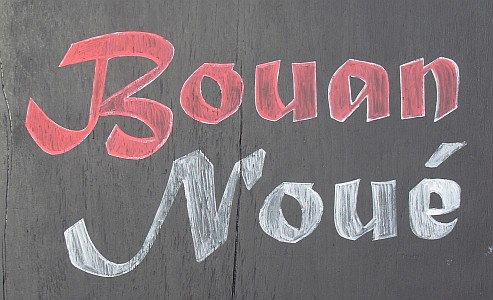

À Portinfé, Saint Ou.
Jeudi au sé.
Moussieu l'Editeu.

J'n'ai pas hardi d'nouvelles à vos raconter à ces sé, mais au mains j'peux vos dithe que mé et ma Merrienne j'eûmes un raide bouon Noué siez Bram et sa grande famille. I' vint nos cherchi et nos rapporter. Ch'tait p't'être aussi bein que j'eûmes du transport à r'vénîn, car j'avais mangi trop, et p't'être bu un mio trop étout, tandis que la Merrienne avait fait d'san mûs étout pour démontrer à la compagnie qu'ou n'avait pas perdu s'n appétit. Avec chonna, Moussieu, ou bu tant d'santés que quand je r'vînmes j'eus à li aidgi à ramonter les d'grès, tandis que l'Bram me donnait un coup d'main par en drièthe. Lé préchain jour ma bouonne femme restit au liet tout l'jour, dîsant qu'ou n'se trouvait pas bein, tandis qu'mé j'restis accroupi aupi du feu dans la tchuîsine, car mes gambes 'taient faillies. Quand la Merrienne éthait voulu que j'li éthais apporté une tâsse de tais, je n'l'entendais pas, et chonna pour la puni, car lé jour de d'vant ou m'avait forchi de dêshaller d'hors, disant que si je n'bouogeais pas mes gambes i' s'trouv'thaient bétôt paralysées. J'fus dans l'gardîn pour un bouon quart-d'heuthe, et, Moussieu, je n'crais pas que dans toute ma vie j'avais trouvé si fraid. Si j'n'ai pas attrapé tchique maladie fatale ch'n'est pas la faute à ma femme. Y'en avait à matîn tchi voulaient dithe tchi n'faisait pas si fraid, mais mé, ayant ouï qu'en Angliétèrre y'avait d'la g'lée et d'la né pièthe que jamais, j'en doutais, et j'avais raison, car comme j'vos êcris chutte lettre ichîn tout Portînfé est couvert de né, et je n'crais pas que ch'est ocquo fini. La gâzette dit que chutte fraid-là veint d'la Russie, et ch'est pôssiblye, car chais balloques de Russes en sont bein capablyes.
Par les gens que j'ai rencontré, le Jour de Noué fut célébré assez comme dé couôtume, sinon qu'au jour d'agniet i'n'y a pas tant d'réunions d'familles, hardi d'monde tch'ont assez d'sous préféthant aller à tchique hôtel pour deus-trais jours. Quand à mé, Moussieu, j'aim'thais mûs pâsser l'jour siez-mé, avec une crôte de pain et un vêrre de bouon cidre, mais nou n'est pas tous d'la même idée, et tant pûs l'temps va, tant pus les vielles couôtumes dispathaissent, comme j'vos l'ai dis pûs d'une fais.
Un homme tch'a bouonne raison d'être satisfait, et bein d'autres avec li, est le Sieur Benest, tchi garde boutique au bas du Mont Félard. Il avait annoncé que l'prix d'la litcheu à sa boutique s'sait pûs bas qu'ailleurs, mais les marchands tchi l'fournissaient objectaient et r'fûsitent de l'faithe s'i' continuait. Il eut un mio d'aide d'un autre boutitchi à Bieaumont, mais ch't'ichîn étout s'trouvit en brit avec les marchands et eut à céder. L'affaithe finalement vînt d'vant la Cour, et après aver entendu les deux bords, ou jugit que l'Sieur Benest et touos l's autres tch'avaient la même catégorie d'licence pouvaient, à l'av'nîn, vendre lûs litcheu à autchun prix, chein tchi veur dithe que y'étha à ch'teu' une forte compétition entre yeux tandis que les marchands éthont étout à observer la louai, même si ch'est d'mauvais tchoeu.
À ch'teu', Moussieu, pour la Nouvelle Année - tchèsque nou peut s'attendre qu'ou s'en va nos am'ner? Ch'est seux et certain, à c'menchi, que, dans les mais de janv'yi et fév'ri, sans pâsler du mais d'mars, tchi peut être le pûs traitre de tous, j'éthons ocquo du temps fraid, mais les jours éthont bétôt alouogni, et si je n'me trompe pas, j'éthais man preumié fricot d'nouvelles patates pas trop tard dans l'mais d'avri. J'ai même entendu que y'a tchiques petits côtils à l'Eta et à Rozé tchi sont dêjà pliantés, mais je n'si pas seux si ch'est vrai, car nou n'peut pas s'fier sûs hardi de chein qu'nou ouait de nos jours.
Chein que j'voulons faithe, la Merrienne et mé, ch'est de souhaiter une raide Bouonne Année pas seulement à nos amîns, mais à tout l'monde. Y'en a tchitchuns que j'éthais bein voulu laissi d'côté, et la Merrienne étout, mais, après réflection, j'avons décidé de n'le faithe pas, car si y'a des gens que j'n'aimons pas, y'en a étout, sans doute, tchi n'se mett'raient pas à plieuther s'i' v'naient à saver que l'pouôre vièr Ph'lip et sa Merrienne 'taient dans la mînsèthe.
I' pouôrrait y'aver tchiques changements dans l's Etats d'vant la fîn d'l'année 1963 et ch'est seux que y'en étha après l's élections pûs tard. Et ch'est seux étout que j'allons être forchis de peyi pûs pour chein tchi faudra accater, sans pâsler des râts, tchi n'peuvent sinon hauchi, mais si nos fermiers font des sous et que l'Ile peut s'mettre à péyi ses dettes; si étout nos Etats ont apprint lûs leçon, y'a bouonne espéthance pour l'av'nîn.
Nou-s-entend que l'célèbre 'J.J.' n'a qu'un examain à pâsser d'vant joindre le banc d'Avocats. J'li souhaitons tout succès, car nou l'a mantchi dans l's Etats, et il a travaillyi bein dû pour la djobbe tch'il a yeu dans l'idée pour des années.
J'eus grand r'gret quand j'entendis que les courses à ch'va avaient 'té abandonnées, comme tant d'autres en Angliétèrre, sans pâsler du football, mais nou r'étha tout chonna pûs tard. Tandis qu'la Merrienne a assez d'forche dans ses bras pour nos fourni du bouais, et que j'avons ocquo un mio de tcherbon souos la tcherquéthie, i' n'faut pas nos pliaindre, car y'a hardi d'gens tchi sont bein pièthes que nous.
À ch'teu', Moussieu, j'ai fini pour 1962 et j'vos souhaitons, la Merrienne et mé, une raide Bouonne Année, avec tout ch'que y'a d'miyeu, sans oublier bouonne santé, tchi vaut tout l'restant.
Viyiz étout: